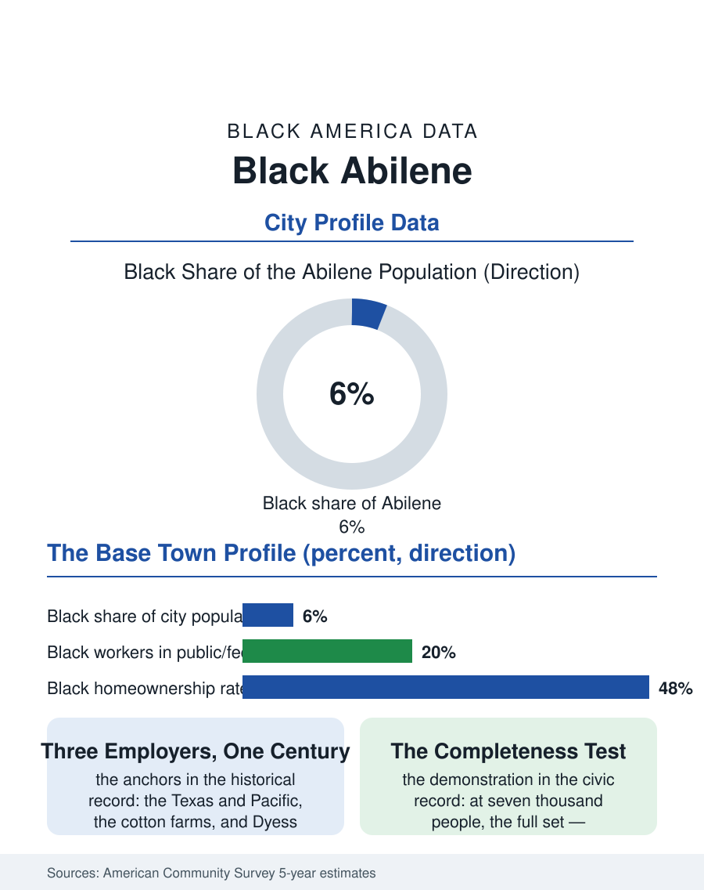

Black Cities
Plains and Bombers: Black Abilene
A railroad, cotton, and bomber-base community of seven thousand sustaining the full architecture of Black civic life on the West Texas plains. The Abilene file.

Abilene's Black community, roughly seven thousand people in a city of about one hundred twenty-five thousand, some five to six percent, is a West Texas community built by the railroad, the cotton economy, and Dyess Air Force Base, the three employers that have defined this city for a century. The American Community Survey counts a small, rooted population whose institutions, its churches, its school traditions, its base families, carry weight beyond the count. This article reads the Abilene file.
Railroad Town, Base Town
Abilene was founded as a cattle shipping point on the Texas and Pacific Railway, and Black Abilenians were present from the founding generation, railroad workers, cowboys in the industry's genuinely multiracial first era, domestics and laborers in the town that grew around the stockyards. The cotton century followed, Taylor County's farms worked by Black tenant and wage labor, and the community consolidated in the Carver Heights and east-side neighborhoods, building the segregated institutions, the Carver school, the churches, that anchored Black life through the era this atlas records everywhere. Dyess Air Force Base, established in the Second World War as a training field and grown into a bomber base, wrote the modern chapter: the federal employment channel that integrated by order and paid by table, drawing Black airmen and civilian workers from the 1950s forward and retiring them into the community, so that Abilene's Black population carries the veteran and federal-worker signature the surveys record in base towns across the atlas. The third anchor is collegiate and distinctive: three church-affiliated universities operate in this small city, and Abilene Christian's and Hardin-Simmons's and McMurry's Black students and staff form a small but steady institutional presence, with the universities' own reckoning with their segregation histories now part of the local record.
The Numbers in Taylor County
The survey profile is the small West Texas pattern. Employment concentrates in the base and its contractors, the hospital systems, the school district, and the retail and service economy of a regional trade center for the ranch country around it. Median Black household income runs below the city median, homeownership follows the rooted pattern of a community that has held its neighborhoods for generations, older housing, high tenure, and equity in homes the broader market values modestly. Population change is slow: the count holds roughly steady across survey cycles, the base's stability offsetting the out-migration of the young toward the metroplex two hours east, the classic small-city exchange this atlas records from the Black Belt to the plains. Educational attainment tracks through the local institutions, the Texas State Technical College campus and the universities carrying the credential pipeline inside the county, an advantage many peer cities lack. The health profile carries West Texas signatures: the distances of rural specialty care, the hospital system's regional role, and the chronic disease burdens of the southern data, managed across a region where the next specialist may be in Fort Worth.
A Small City's Full Set
What the Abilene file demonstrates, at seven thousand people, is the completeness threshold this atlas keeps testing: how small a Black community can be and still sustain the full institutional set. Abilene clears it. The churches are historic and organized; the NAACP chapter dates deep into the century; the Juneteenth and King Day observances are civic fixtures; the Carver alumni tradition preserves the segregated school's memory as an asset, its reunions drawing the diaspora back from Dallas and Houston; and Black Abilenians have held school board and city posts in the pattern of the region's slow political integration. The base keeps underwriting the community's economic floor, and the energy economy of the Permian Basin's eastern edge, wind as well as oil now, sends its booms and busts through the county's service economy. Abilene's Black population will remain small in every projection, and the file's judgment is that its significance is not in the count but in the demonstration: on the high plains of West Texas, in a ranching and bomber town, a Black community built the entire architecture of Black American civic life at one-twentieth the scale of the great cities, and maintains it still. The census counts five percent. The Carver reunions count the rest.
More in Black Cities
Black Atlanta: Population, Distribution, and Growth of a Black Metropolis
Metro Atlanta holds more than two million Black residents — roughly one in three, second only to New York. The suburban distribution, migration history, and composition of Black Atlanta in the census data.
Black New York: The Largest Black Population in America
The New York metropolitan area holds about 3.4 million Black residents — more than any metro in the nation — and the city itself about two million. The census profile.
Black Washington: The District and the Metro
The Washington metro holds about 1.6 million Black residents, and the District itself — long a majority-Black city — now records a Black share near 41 percent. The census profile.
Source: U.S. Census Bureau, American Community Survey 5-year estimates for Abilene, TX; Taylor County historical records.